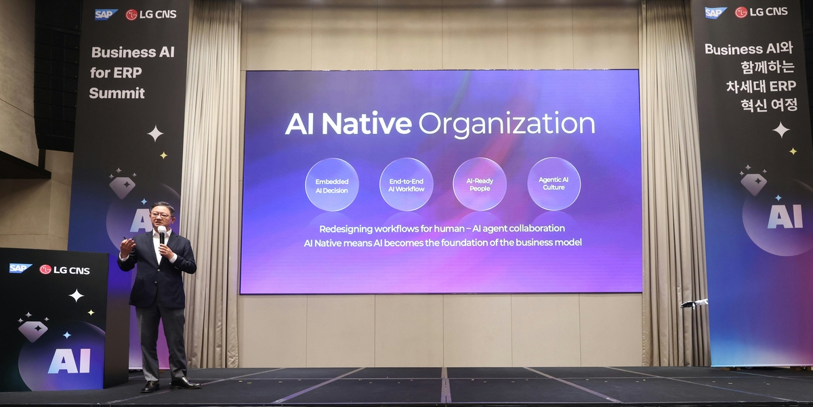
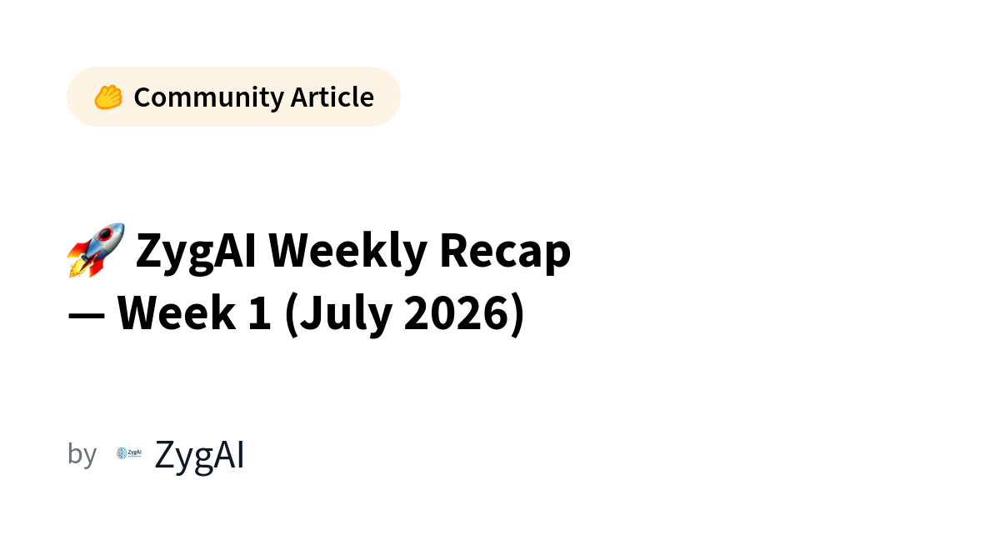
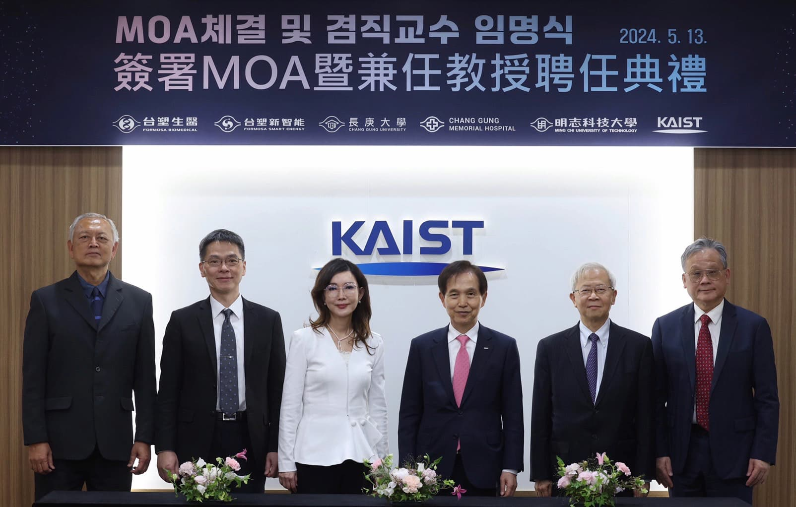
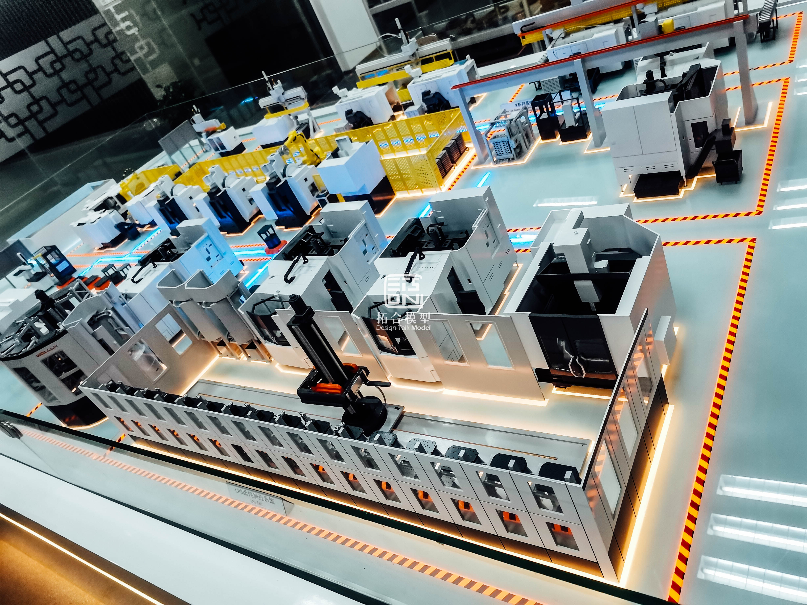
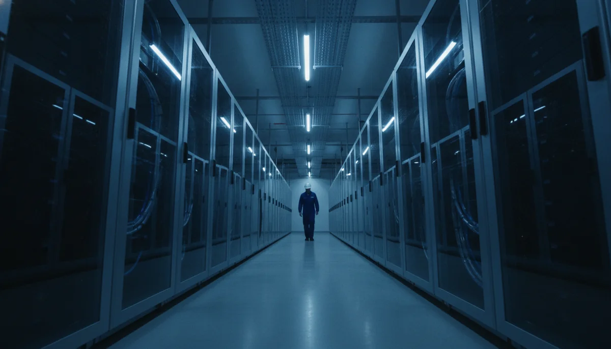
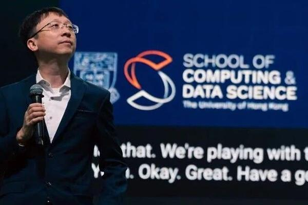
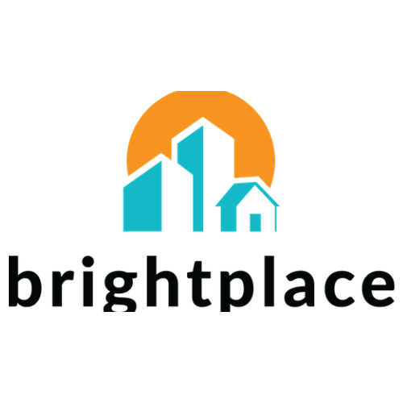
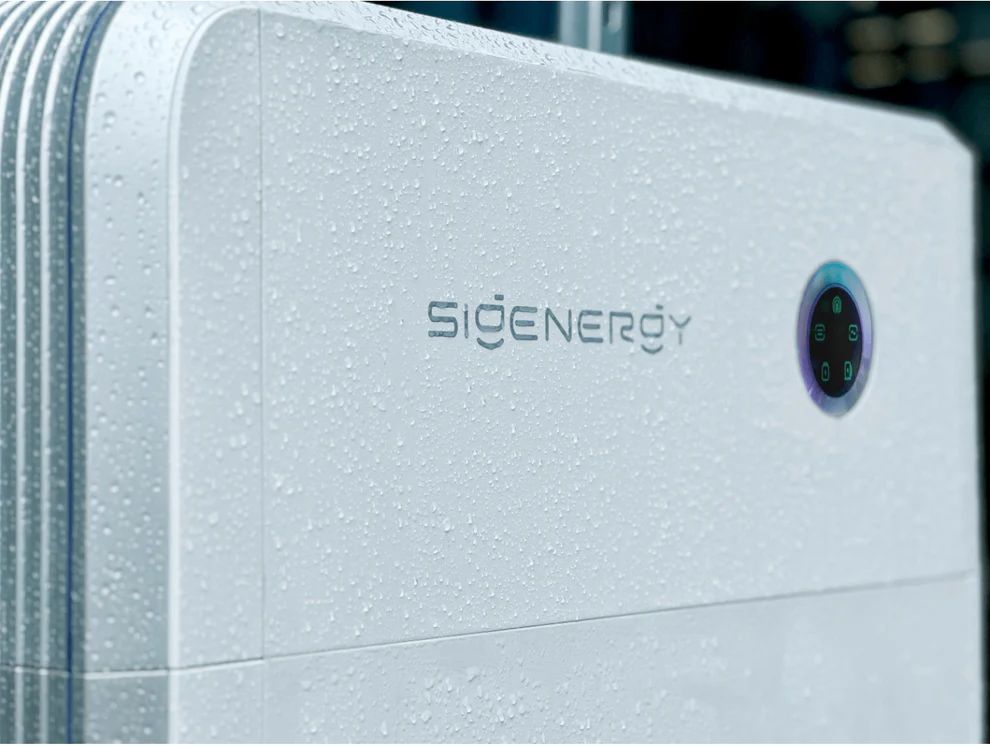

Janet 快车箱
AI Daily Briefing
2026-07-06
VOL 279
对中国创作者和中小企业来说，今天的信号很冷：AI 工具会越来越多，但便宜、稳定、可控才是真门槛。视频生成要看可商用一致性，AI 搜索要看内容入口还剩多少流量，Agent 工作流要先算 token、电力和失败重跑成本，不要被“全自动”三个字骗去当付费测试员。
接下来 2-4 周盯三条线：可灵和 Seedance 会不会把视频生成价格继续打穿；韩国、国内和中东的 AI 数据中心订单会不会推高算力租金；具身智能融资能不能从“造大脑”走到可交付样机，否则资本热度会很快变成库存压力。

Naver 的 AI Tab 采用搜索优化 lightweight LLM，没有把所有问题都丢给通用大模型。报道提到，Naver 通过意图理解、上下文掌握和 SLM 分工，把搜索、购物、预约等真实服务场景的响应速度与成本放到同一张表上。

iFLYTEK 中亚开放平台把 Spark Agent Platform 与 Spark MaaS 放进同一套方案，强调政府、企业、高校和开发者可以在统一底座上构建 AI-powered solutions。它的重点在区域市场的开发平台与交付网络，单个模型跑分只是入场券。

Hugging Face 上的 ZygAI 周报发布 2026 年 7 月第一周多模态模型 benchmark，使用相同真实图片对多款模型做植物识别测试，比较回答质量、推理、实用性和图像理解。测试覆盖 ZygAI GPT-5.4 Mini、Nano、Claude Sonnet、Gemini 3.1、Qwen 3.6 35B A3B 等模型。

Naver 的技术方案把部分意图识别、上下文处理和服务场景任务交给 small language models 分担。报道称这种分工让 AI Tab 响应速度翻倍，并把成本压到原来的三分之一，证明搜索 AI 不一定要堆最大模型。

Seoul Economic Daily 报道，KAIST Professor Yu Min-soo 团队分析显示，AI agents 的能耗是标准 generative AI 的 136 倍。研究指出，Agent 完成任务时 LLM 调用次数约为普通生成式 AI 的 9.2 倍，响应时间则增加 153.7 倍。

人民网报道指出，今年 AI Engineer World's Fair 的关注点转向可部署、可验证、可扩展，并能稳定运行于真实生产环境的 AI 系统。Context Engineering、Inference、RAG 系统、多模态生成和 AI infrastructure 成为核心议题。
央广网报道，2026 全球数字经济大会人工智能融合应用发展论坛在北京举办，主题为“智驱实体，数创未来”。论坛围绕人工智能对千行百业的影响与重塑，讨论 AI 从技术突破到真实生产力落地的路径。

Seoul Economic Daily 在 AI infrastructure 相关报道中提到，SKT 将 AI data center 视为韩国继高速公路和高速互联网后的第三类创新基础设施。1GW AI 数据中心的典型成本可达约 70 万亿韩元，资金将来自自有投资、战略伙伴、长期客户合同和 project financing。

36氪报道，港大教授成立的忆生科技 TranscEngram 完成数亿元天使轮融资，投资方包括中生制药、浦东创投、张江科投、张江高科等。公司目标是用“感知—预测—交互”闭环构建机器人“大脑+小脑”统一系统，探索可解释自主智能。

EINPresswire 报道，AI-native apartment rental discovery platform brightplace.ai 入选 RET Ventures 首个 PropTech AI Accelerator。公司基于 IntentOS 结构化租赁房源、社区和财务数据，面向多户住宅租赁与营销场景做 AI-driven search。
GlobeNewswire 报道，ZoomInfo 投资者诉讼文件称，客户正在转向 consumption-based usage models，并开发内部 AI-driven go-to-market solutions。诉讼指控公司淡化相关趋势对业务的影响，反映 AI 正在冲击传统销售数据软件的座席订阅模式。

GlobeNewswire 报道，Sigenergy 发布 AI-driven 家庭能源系统 SigenStor Neo，并在 mySigen App 4.0 中集成 SigenAgent。公司称该 Agent 可感知、分析并自主行动，目标是在保留备电能力的同时降低用电成本，把“用户设定目标，AI 负责执行”带进家庭能源管理。